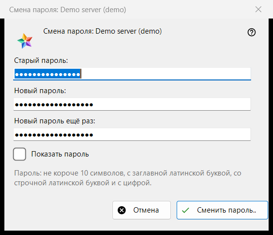
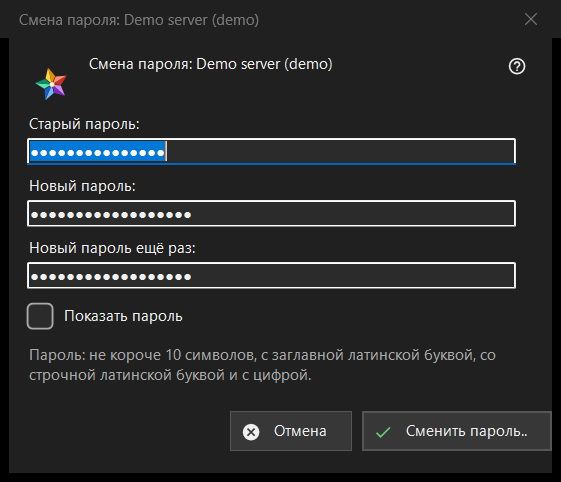

Смена пароля
Назначение
Меняет пароль вашей учётной записи на сервере обмена. Окно открывается кнопкой «Сменить пароль..» записи сервера в разделе «Мои устройства» списка ресурсов; кнопка видна, пока сервер на связи. В заголовке называется учётная запись.


Порядок действий
- Введите старый пароль.
- Дважды введите новый пароль.
- Нажмите «Сменить пароль..»; «Отмена» закрывает окно, ничего не отправляя.
Элементы окна
Три поля
«Старый пароль:», «Новый пароль:» и «Новый пароль ещё раз:»; «Показать пароль» их показывает. При закрытии окна поля стираются. Окно лишь собирает пароли: отправляет их серверу просмотрщик по соединению этой записи.
Правило для пароля
Пояснение гласит: не короче 10 символов, с заглавной и строчной латинскими буквами и цифрой. Окно проверяет это до отправки и называет, чего не хватает, например «Пароль короче 10 символов.» или «В пароле нет цифры.»; кроме того, оно говорит «Укажите старый пароль.» и «Пароли в двух полях не совпали.». Сервер применяет то же правило, и последнее слово за ним.
После смены
При успехе состояние сообщает «Пароль сменён. Этот компьютер продолжает работать, а другие устройства учётной записи должны войти заново.» Отказы: старый пароль не подошёл; слишком много попыток (подождите минуту и повторите); сервер отказал в смене; нет связи с сервером (подключитесь и повторите).